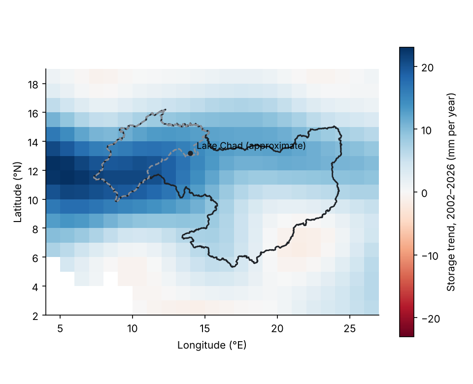
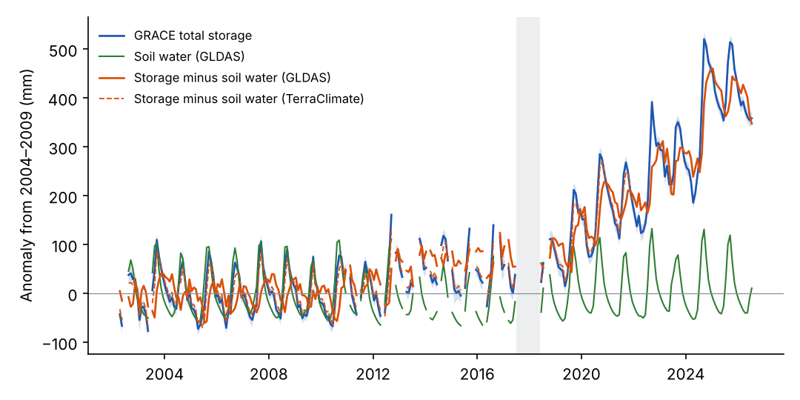
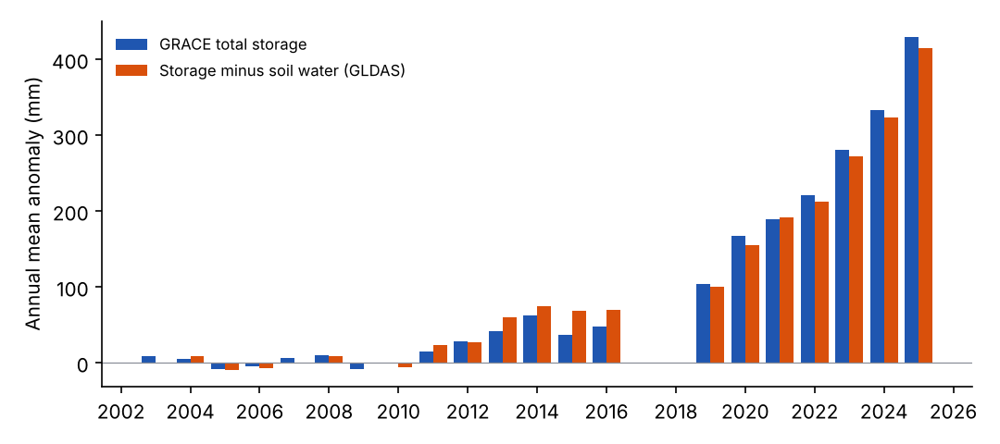

Water storage in the Lake Chad basin from GRACE and GRACE-FO, 2002–2026
David OloyedeNovember 2026
Abstract
We ask whether water storage in the Lake Chad basin has fallen or risen since 2002, when, by how much, and how much of the change remains after removing soil water. We average two GravIS gravity solutions (COST-G and GFZ; 259 monthly fields for COST-G, 2002-04 to 2026-07, 33 months missing including the 2017–2018 break between the GRACE and GRACE-FO missions) over the HydroBASINS level-3 unit that holds the whole lake system (1,119,893 km²), and subtract soil water from GLDAS Noah and TerraClimate. Storage was close to flat for the first part of the record and then rose steeply. A two-segment fit puts the change in October 2018 (best breaks July 2018 to January 2019): total storage changed by +0.9 mm per year before it (−1.4 to +3.1) and +34.8 mm per year after it (+29.4 to +40.2). After removing GLDAS soil water, storage rose by +32.7 mm per year over the GRACE-FO years 2018–2026 (+25.7 to +39.8), about 37 km³ per year over the basin unit. Across the two gravity solutions and with or without the product’s leakage correction, that rate ranges from +32.7 to +57.2 mm per year. A straight line through the whole record gives +9.2 mm per year (+4.8 to +13.6), but this summary depends on the end date (+3.8 mm per year to 2021, +6.0 to 2023). The remainder holds groundwater and surface water together, which this study cannot separate, and there is no independent groundwater validation.
Keywords: GRACE; GRACE-FO; terrestrial water storage; groundwater; Lake Chad; Sahel
1. Introduction
Satellite gravimetry measures changes in all the water stored in a region: soil water, groundwater, lakes, rivers and wetlands together. Groundwater is usually estimated by subtracting the other stores, taken from land-surface models, so its quality depends on those models and on what is left out.
An earlier version of this study reported groundwater storage over
the Quaternary Chad Formation falling by 5.84 mm per year from 2002 to
2025 and validated it against five boreholes. An audit found that its
time series did not have the structure of the GRACE record (evenly
spaced steps and no 2017–2018 gap), that the borehole series had no
documented source, and that several numbers did not match the data. That
series was not derived from the published GRACE record, and the version
is withdrawn; it is kept in archive/withdrawn-v1/ for the
record. This note rebuilds the analysis from published gravity data.
We ask two questions. How has total water storage in the Lake Chad basin changed since 2002, and how certain is that? And how much of the change remains after removing soil water, which is the closest this study can get to groundwater?
2. Data and methods
2.1 Study area
No published outline of the Chad Formation aquifer was available, so the study area is a river-basin unit. The main area is the HydroBASINS level-3 unit that contains Lake Chad (1,119,893 km²; Lehner & Grill, 2013). It holds the lake’s terminal level-4 unit and every level-4 unit that drains to it. As a sensitivity test we use a smaller level-4 unit west of the lake (248,870 km²), which drains into the terminal unit and does not contain the whole lake.
2.2 Data
Gravity. Terrestrial water storage anomalies come from the GravIS Level-3 products on a 1-degree grid in equivalent water height, with a standard deviation for each month: the COST-G RL02 combination (Boergens et al., 2025), used for the main results, and the GFZ RL06 solution (Boergens et al., 2019), used as a second solution. The two are not independent: COST-G combines several analysis centres including GFZ, and both use the same GravIS processing. GRACE resolves features of a few hundred kilometres, so the 1-degree grid is smoother than it looks. Each monthly field is matched to the calendar month of its mid-date; where two fields fall in one month, the later one is moved to the following month, which has none. Missing months stay missing.
Soil water. GLDAS-2.1 Noah monthly (Rodell et al., 2004; Beaudoing & Rodell, 2020) gives soil moisture in four layers down to 2 m, snow and canopy water, from 2002 to 2026-07. TerraClimate (Abatzoglou et al., 2018) gives soil water at the end of each month from a simpler bucket model, available here to 2021-12. Its seasonal cycle over the basin is about half that of GLDAS (40 against 78 mm), so it removes less water and is a weaker test. Neither model includes lakes, rivers or wetlands.
Each grid is averaged over the study area with weights equal to the fraction of each cell inside the area times the cosine of latitude.
2.3 Separation
All series are anomalies from their own mean over the GRACE months of 2004–2009. The residual storage is the gravity anomaly minus the soil-water anomaly. It contains groundwater and surface water together.
2.4 Rates and uncertainty
Rates are fitted together with annual and semi-annual cycles by generalised least squares with first-order autoregressive errors that respect the missing months; monthly values are strongly autocorrelated, so ordinary least squares would understate the uncertainty. Because the record has distinct phases, we report: a rate for each period (2002–2010, 2011 to mid-2017, and the GRACE-FO years from mid-2018); a continuous two-segment fit whose break month is chosen by the Akaike information criterion, with the range of break months within 2 units of the best; the straight-line rate through the whole record for three end dates; and the spread of rates across choices (gravity solution, leakage correction, soil model, study area). The GRACE errors stated in the product change the full-record rate by only 0.11 mm per year when drawn independently each month. That is a lower bound, because it ignores errors shared between months and between the missions; the spread across choices is the larger uncertainty.
The break falls close to the 2017–2018 gap between the missions, so we also fit separate straight lines to the GRACE and GRACE-FO years and estimate the step between them at the middle of the gap.
2.5 Consistency check
G3P v1.12 (Güntner et al., 2024) is a groundwater product built from an earlier release of the COST-G combination (RL01), with separate layers for groundwater, soil water and surface water. Because it uses largely the same gravity data, agreement with it is a check of consistency, not a validation. We compare over the 225 months both cover (2002-04 to 2023-09).
3. Results
3.1 Total water storage

Over the basin unit, total storage changed little until 2018: −0.9 mm per year in 2002–2010 (−4.8 to +3.0) and +1.5 mm per year from 2011 to mid-2017 (−7.0 to +10.0). In the GRACE-FO years it rose by +33.5 mm per year (+25.4 to +41.7). The two-segment fit is much better than a single line (Akaike criterion lower by 350), with its break in October 2018. Annual mean storage stayed within −15.2 to +13.0 mm of the 2004–2009 mean in the complete years up to 2016, and reached 273 mm above it in 2025 (Figure 2, Figure 3).
The step between the missions is estimated at −21.2 mm (−64.8 to +22.4). It is not distinguishable from zero and points the wrong way to explain the rise, which is measured within the GRACE-FO years alone. A small step cannot be ruled out; it would mostly affect the straight-line rate through the whole record.
The cells that overlap the basin unit have straight-line trends from −1.6 to +21.5 mm per year (Figure 1). The largest is in the cell centred at 11.5° N, 7.5° E, west of the lake, while the cell holding the lake marker has +14.6 mm per year.

3.2 After removing soil water
GLDAS soil water shows no clear trend over the record (+0.1 mm per year, −0.6 to +0.8), so the residual follows total storage. Its rate is −0.9 mm per year in 2002–2010, +3.5 mm per year from 2011 to mid-2017 and +32.7 mm per year in the GRACE-FO years (+25.7 to +39.8); its two-segment fit breaks in April 2019. With TerraClimate soil water over the years it covers (to 2021-12), the residual changes by +3.7 mm per year, against +3.8 mm per year with GLDAS over the same years; both are small because those years end before most of the rise.
The straight-line rate through the whole record is +9.2 mm per year (+4.8 to +13.6). It is a summary, not a constant rate: ending the record in 2021 gives +3.8 mm per year and ending in 2023 gives +6.0.

3.3 Sensitivity and consistency
| Gravity solution | Area | Soil water | Rate 2002–2026, mm per year (95% interval) | Rate in GRACE-FO years, mm per year (95% interval) |
|---|---|---|---|---|
| COST-G RL02 | Basin unit (level 3) | GLDAS | +9.2 (+4.8 to +13.6) | +32.7 (+25.7 to +39.8) |
| COST-G RL02 | Basin unit (level 3) | GLDAS, leakage removed | +12.0 (+5.8 to +18.2) | +45.1 (+34.9 to +55.4) |
| COST-G RL02 | Basin unit (level 3) | TerraClimate (to 2021-12) | +3.7 (+0.8 to +6.7) | not covered |
| COST-G RL02 | Western unit (level 4) | GLDAS | +15.5 (+10.4 to +20.6) | +44.6 (+37.1 to +52.0) |
| COST-G RL02 | Western unit (level 4) | GLDAS, leakage removed | +22.8 (+14.7 to +30.9) | +73.4 (+62.2 to +84.5) |
| COST-G RL02 | Western unit (level 4) | TerraClimate (to 2021-12) | +8.6 (+6.0 to +11.1) | not covered |
| GFZ RL06 | Basin unit (level 3) | GLDAS | +8.9 (+5.1 to +12.7) | +34.0 (+28.4 to +39.6) |
| GFZ RL06 | Basin unit (level 3) | GLDAS, leakage removed | +14.2 (+9.2 to +19.4) | +57.2 (+47.2 to +67.2) |
| GFZ RL06 | Basin unit (level 3) | TerraClimate (to 2021-12) | +3.4 (+0.6 to +6.2) | not covered |
| GFZ RL06 | Western unit (level 4) | GLDAS | +14.6 (+10.6 to +18.5) | +46.8 (+40.7 to +52.9) |
| GFZ RL06 | Western unit (level 4) | GLDAS, leakage removed | +25.9 (+19.5 to +32.3) | +100.2 (+87.1 to +113.3) |
| GFZ RL06 | Western unit (level 4) | TerraClimate (to 2021-12) | +7.2 (+5.0 to +9.3) | not covered |
Table 1. Residual storage rates (gravity minus soil water) under each choice. Intervals from generalised least squares with autoregressive errors. TerraClimate rows end in 2021-12.
In the basin unit, the GRACE-FO rate ranges from +32.7 to +57.2 mm per year across the two solutions and the leakage choice, and the product’s leakage correction raises it. The western level-4 unit, where the rise is strongest, gives higher rates throughout.
Over the 225 months in common (2002-04 to 2023-09), our total storage and G3P’s correlate at 0.999, with rates of +6.1 and +6.1 mm per year. Our residual and G3P’s groundwater layer correlate at 0.78, with rates of +6.1 and +6.1 mm per year; G3P’s groundwater has a larger seasonal cycle (55 against 47 mm). G3P’s surface-water layer stays between −0.9 and 2.9 mm over the basin, so G3P counts nearly the whole residual as groundwater; the comparison cannot split lake water from groundwater. It also ends before the steepest part of the rise.
3.4 Explore the data
The map shows the straight-line storage trend of each 1-degree GRACE cell from 2002 to 2026. Select a cell to read its value; with a keyboard, press Tab to reach the map and use the arrow keys. The solid outline is the level-3 basin unit and the dashed outline the western level-4 unit. A 1-degree cell is finer than what GRACE resolves (a few hundred kilometres), so neighbouring cells are not independent.
Select a cell for its trend.
Show the cells in the basin unit as a table
The chart shows the monthly series for the basin unit. Use the buttons to show or hide each series. Lines break where GRACE has no month.
4. Discussion
Water storage in the Lake Chad basin changed little from 2002 to about 2018 and then rose steeply. Almost all of the rise remains after removing GLDAS soil water. This study does not test what caused it: rainfall, river inflow and lake extent were not analysed.
Whether the rise is groundwater cannot be settled here. The basin unit contains the lake, its wetlands and the floodplains of its inflowing rivers, and the gravity record cannot tell water in them from groundwater. G3P counts the change as groundwater, but its surface-water layer stays close to zero over the basin, so it does not settle the question either. Lake level from satellite altimetry would help; the Hydroweb service lists a Lake Chad series, but it could not be reached from the environment used for this study.
The earlier version of this study reported a steady decline for a differently drawn and undocumented area. Its series was not derived from the published GRACE record, and the gravity record used here shows no decline over the basin unit.
5. Limitations
There is no independent groundwater measurement: no well records were available, so the result is not validated. The residual contains groundwater and surface water together. The study area is a river-basin unit, not the aquifer outline, and the strongest rise lies in its western part. GRACE resolves a few hundred kilometres and signal leaks in and out of the unit; the leakage correction changes the GRACE-FO rate by more than its stated interval. Only two gravity solutions from the same processing chain were used. The soil models differ in depth and physics, and neither was compared with soil-moisture observations. The rise is concentrated in the last years of the record, so the full-record rate depends on the end date, and the break sits near the mission gap, so a small step between the missions cannot be ruled out. The intervals cover sampling and autocorrelation, not errors shared by the models or the gravity solutions.
6. Conclusion
Over the Lake Chad basin unit, water storage was close to flat until about 2018 and then rose by +33.5 mm per year in total storage and +32.7 mm per year after removing soil water (+32.7 to +57.2 across the gravity solution and leakage choices). The water is in groundwater, surface water or both, which this study cannot separate. The earlier claim of a groundwater decline is not supported by the gravity record.
Data and code availability
Code is released under the MIT licence and derived data under CC BY
4.0, from https://github.com/oloyededavid/Groundwater-Storage-Gravimetry.
The results in this note are read from
docs/data/results.json and
docs/data/grace_cells.json, which the scripts in
scripts/ write. Source data keep their own terms.
References
Abatzoglou, J. T., Dobrowski, S. Z., Parks, S. A., & Hegewisch, K. C. (2018). TerraClimate, a high-resolution global dataset of monthly climate and climatic water balance from 1958–2015. Scientific Data, 5, 170191. https://doi.org/10.1038/sdata.2017.191
Beaudoing, H., & Rodell, M. (2020). GLDAS Noah Land Surface Model L4 monthly 0.25 x 0.25 degree, Version 2.1. NASA Goddard Earth Sciences Data and Information Services Center. https://doi.org/10.5067/SXAVCZFAQLNO
Boergens, E., Dobslaw, H., & Dill, R. (2019). GFZ GravIS RL06 Continental Water Storage Anomalies (Version 0006). GFZ Data Services. https://doi.org/10.5880/GFZ.GRAVIS_06_L3_TWS
Boergens, E., Dobslaw, H., & Dill, R. (2025). COST-G GravIS RL02 Terrestrial Water Storage Anomalies (Version 0001). GFZ Data Services. https://doi.org/10.5880/COST-G.GRAVIS_02_L3_TWS
Güntner, A., Sharifi, E., Haas, J., et al. (2024). Global Gravity-based Groundwater Product (G3P) (Version 1.12). GFZ Data Services. https://doi.org/10.5880/G3P.2024.001
Lehner, B., & Grill, G. (2013). Global river hydrography and network routing: baseline data and new approaches to study the world’s large river systems. Hydrological Processes, 27(15), 2171–2186. https://doi.org/10.1002/hyp.9740
Rodell, M., Houser, P. R., Jambor, U., et al. (2004). The Global Land Data Assimilation System. Bulletin of the American Meteorological Society, 85(3), 381–394. https://doi.org/10.1175/BAMS-85-3-381